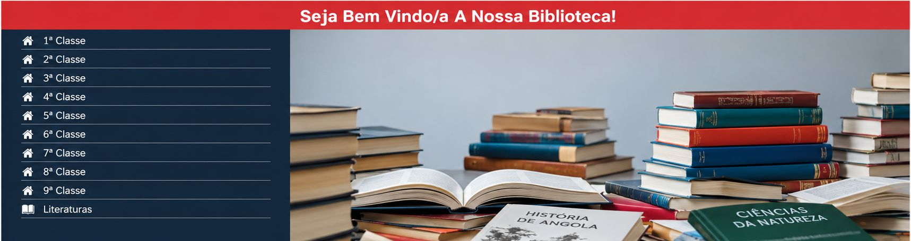
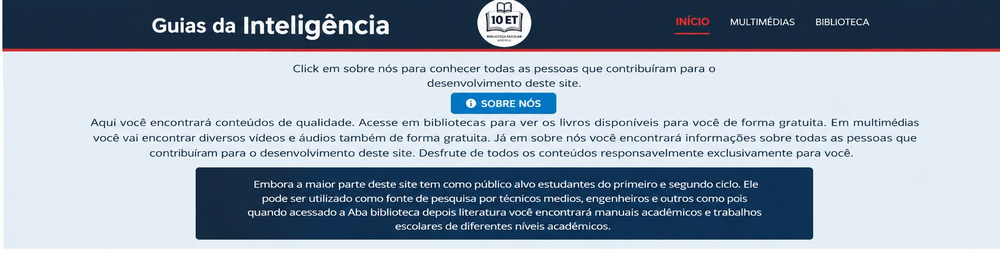

Biblioteca Escolar
Website para disponibilização e organização de livros escolares e outros materias da 1ª à 9ª classe. Mais que pode ser usado por pessoas de diferentes nives academicos.
Biblioteca Escolar

Este Sistema é uma plataforma desenvolvida por mim com o objetivo de disponibilizar diferentes tipos de conteúdos acadêmicos e didáticos, permitindo que estudantes e pessoas de diferentes níveis acadêmicos encontrem materiais que possam contribuir para os seus estudos, pesquisas e desenvolvimento pessoal.
A plataforma disponibiliza diversos tipos de conteúdos, incluindo livros, documentos, vídeos, áudios e outros materiais educativos. Dispõe de uma inter face simplis e interativa permitindo o uso a qualquer tipo de pessoa.
Atualizações
A primeira versão deste projeto representa uma versão já preparada para utilização e posterior colocação em produção. Mais como evolução do projeto, está prevista a implementação de uma nova versão com recursos administrativos mais avançados.
A nova versão terá como principal objetivo implementar um Painel Administrativo, permitindo que os responsáveis pela plataforma tenham maior controle sobre os conteúdos disponibilizados no sistema. Por meio desse painel, os administradores poderão: Cadastrar, Atualizar e Escluir - livros, vídeos e áudios,
Tecnologias
Para o desenvolvimento e evolução do sistema vou utilizar diversas
tecnologias, como:
PHP — linguagem principal do backend;
Laravel — framework para estruturar a aplicação;
PhpMyAdmin - para a Base de Dados;
HTML5 e CSS3 — estrutura e estilização das páginas;
Bootstrap — criação de uma interface responsiva;
JavaScript — implementação de interações e funcionalidades no
frontend;
Visual Studio Code e o Laragon — criar e organizar o ambiente de
desenvolvimento.